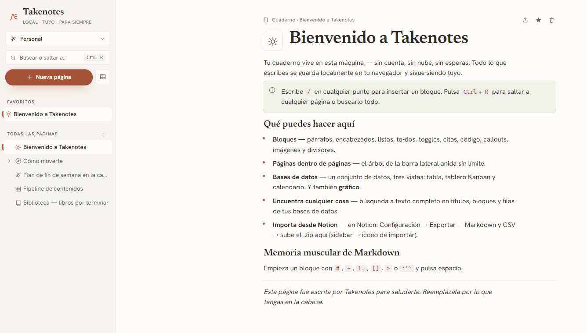
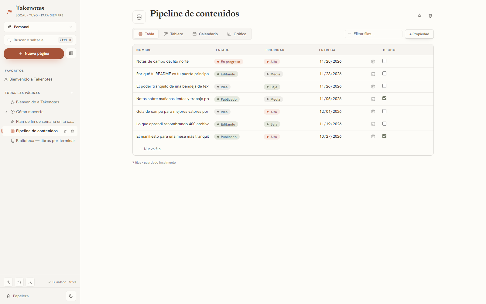
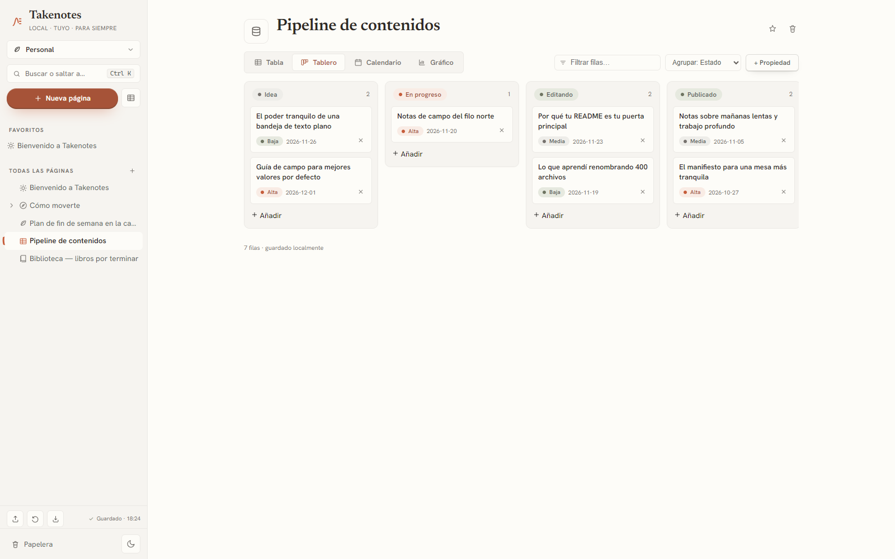
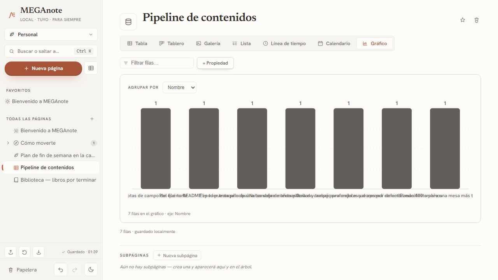
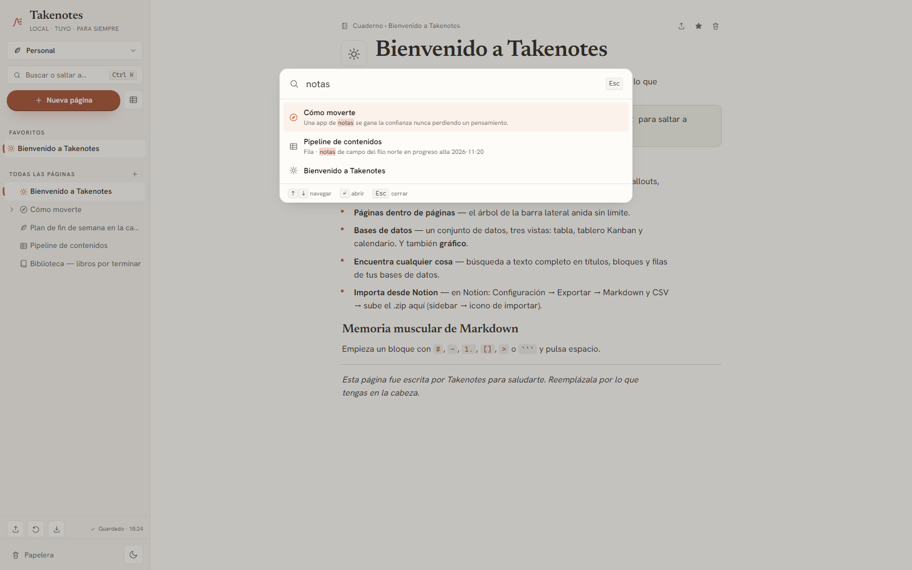
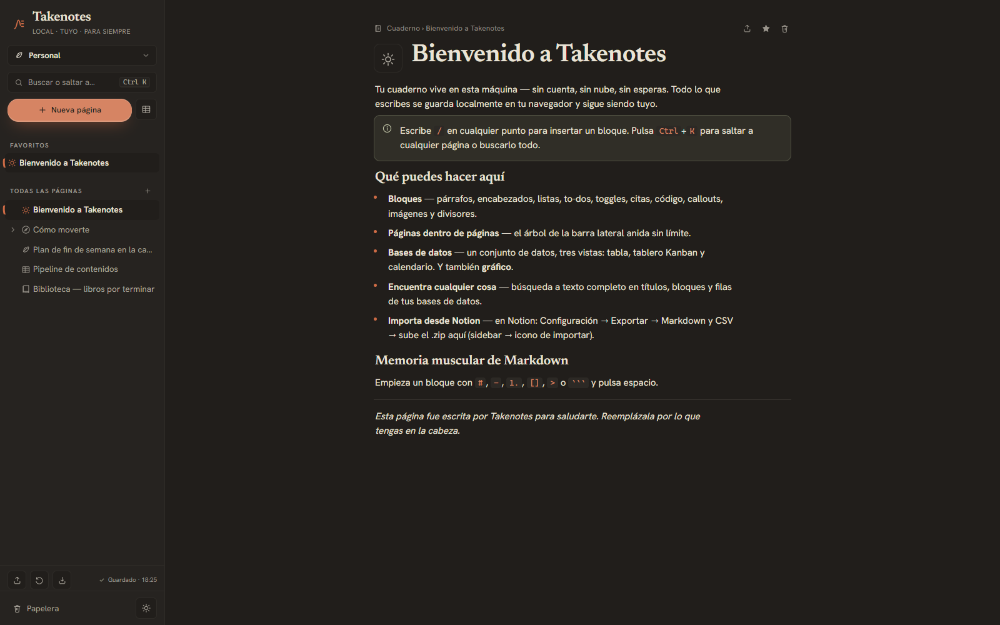
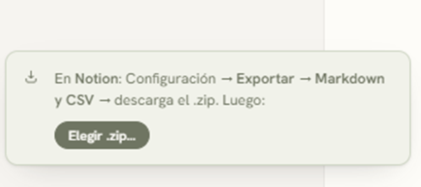

01
Editor de bloques
Encabezados, listas, to-dos, subpáginas, tabla de contenido, enlaces y adjuntos. Haz clic en el papel libre para escribir donde quieras; escribe / y aparece el menú.
Alternativa a Notion · open source · local-first
Una app de notas con la calma de un cuaderno y las funciones de Notion: bloques, páginas anidadas, bases de datos y búsqueda. Sin cuenta, sin nube, sin telemetría.
Gratis, libre y en español (MIT)·13 MB·Windows 10/11 y navegador

Lo que sí usas
Takenotes no intenta ser todas las herramientas. Replica las funciones que sostienen un sistema de notas personal y las pule hasta que desaparecen.
01
Encabezados, listas, to-dos, subpáginas, tabla de contenido, enlaces y adjuntos. Haz clic en el papel libre para escribir donde quieras; escribe / y aparece el menú.
02
Tabla, kanban, calendario, galería y gráfico sobre los mismos datos. Ordena, filtra y agrupa sin construir fórmulas.
03
Ctrl + K encuentra títulos, párrafos y filas de bases de datos al instante. Sin indexar en la nube.
04
Sube el .zip del export Markdown y CSV. Páginas, jerarquía, bases de datos e imágenes, reconstruidas en local.
05
Personal y Trabajo, cada uno con su árbol, sus bases de datos y su papelera. Cambia con un clic.
06
«The Night Desk»: el mismo cuaderno de noche, con papel ember cálido. Sigue a tu sistema o se cambia a mano.
Por dentro
Capturas reales de la app, no renders. Cuatro matices, tipografía editorial y ninguna caja innecesaria.




Privacidad por diseño
No hay servidor, ni cuenta, ni analítica. Takenotes es una aplicación local que casualmente sabe escribir en Markdown y dibujar tablas.

Migrar sin fricción
El importador usa el formato de intercambio oficial de Notion. No es una captura de pantalla: reconstruye la estructura.
Configuración → Exportar → Markdown y CSV, con subpáginas incluidas. Descarga el .zip.
En Takenotes, icono de importar en el pie de la barra lateral → Elegir .zip….
Páginas, jerarquía, bases de datos (con tipos inferidos) e imágenes aparecen en tu cuaderno local.

El importador, tal como aparece en el pie de la barra lateral.
Empieza en un minuto
Un ejecutable de 13 MB, una demo en el navegador o el código completo. Los tres son la misma app.
Un solo Takenotes.exe sobre WebView2. Sin instalador, sin servicios en segundo plano.
Descargar el .exe~13 MB · Windows 10/11 · SmartScreen puede pedir confirmación
La demo es un único archivo HTML autocontenido. Los datos quedan en el IndexedDB de tu navegador.
Abrir la demoFunciona offline una vez cargada
React 19, TypeScript e IndexedDB. Licencia MIT: léelo, cámbialo, redistribúyelo.
Ver en GitHubIssues y PRs bienvenidos
Dudas razonables
Si falta algo, abre un issue en GitHub y lo respondemos en público.
Abrir un issueSí. Es open source con licencia MIT: sin cuenta, sin plan de pago y sin límite de páginas. Puedes usarlo, modificarlo y redistribuirlo.
En IndexedDB dentro de la app. En el ejecutable de Windows, en %APPDATA%\\Takenotes. Nada sale de tu máquina, y puedes exportarlo en JSON o Markdown.
Sí. Exporta en Notion con Configuración → Exportar → Markdown y CSV, descarga el .zip y usa el icono de importar. Se reconstruyen páginas, jerarquía, bases de datos e imágenes.
Sí. La app es 100 % local y no hace peticiones de red en tiempo de ejecución. Solo necesitas internet para descargarla la primera vez.
No. Replica las funciones principales con interfaz y código propios. No incluye colaboración en tiempo real, IA ni publicaciones web.
El build web funciona en cualquier navegador moderno. El ejecutable de escritorio es Windows por ahora; el launcher de Python es multiplataforma y acepta contribuciones.